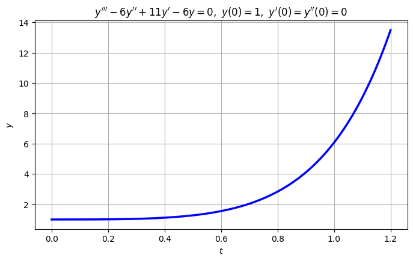
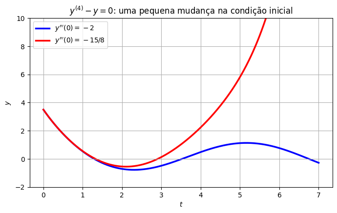

Equações Homogêneas de Ordem Superior#
Considere a equação homogênea de ordem \(n\) com coeficientes constantes
A ideia é exatamente a mesma da segunda ordem: testar \(y=e^{rt}\). Como \(\dfrac{d^k}{dt^k}e^{rt}=r^ke^{rt}\), a substituição dá
\(Z(r)\) é o polinômio característico. Pelo Teorema Fundamental da Álgebra, ele tem exatamente \(n\) raízes (complexas, contando multiplicidades). Cada raiz vai contribuir com soluções, e no total teremos as \(n\) soluções de que precisamos.
O resultado geral#
Teorema. Considere a equação \(a_n y^{(n)} + \cdots + a_1 y' + a_0 y = 0\), com \(a_0,\dots,a_n\) constantes reais e \(a_n\neq0\).
(Existência e unicidade) Dadas \(n\) condições iniciais \(y(t_0)=y_0,\ y'(t_0)=y_1,\ \dots,\ y^{(n-1)}(t_0)=y_{n-1}\), o PVI tem uma única solução, definida para todo \(t\).
(Solução geral) Se \(y_1,\dots,y_n\) são soluções cujo Wronskiano $\( W(y_1,\dots,y_n) = \begin{vmatrix} y_1 & y_2 & \cdots & y_n\\ y_1' & y_2' & \cdots & y_n'\\ \vdots & \vdots & & \vdots\\ y_1^{(n-1)} & y_2^{(n-1)} & \cdots & y_n^{(n-1)}\end{vmatrix} \)\( não se anula, então toda solução é da forma \)y=c_1y_1+c_2y_2+\cdots+c_ny_n$.
(Conjunto fundamental) Um tal conjunto de \(n\) soluções é obtido a partir das raízes de \(Z(r)\), conforme a tabela:
Raiz de \(Z(r)\) |
Multiplicidade |
Soluções correspondentes |
|---|---|---|
\(r\) real |
\(s\) |
\(e^{rt},\ te^{rt},\ \dots,\ t^{s-1}e^{rt}\) |
\(\lambda\pm i\mu\) (par complexo) |
\(s\) |
\(e^{\lambda t}\cos\mu t,\ e^{\lambda t}\,\text{sen}\,\mu t,\ \dots,\ t^{s-1}e^{\lambda t}\cos\mu t,\ t^{s-1}e^{\lambda t}\,\text{sen}\,\mu t\) |
É exatamente a mesma receita da segunda ordem — real distinta, repetida, complexa — com uma única novidade: uma raiz pode aparecer três ou mais vezes, e então seguimos multiplicando por \(t\): \(e^{rt}, te^{rt}, t^2e^{rt},\dots\) Como para a segunda ordem, o Wronskiano dessas funções nunca se anula, então a tabela sempre fornece a solução geral.
O item 2 também explica por que um PVI de ordem \(n\) precisa de \(n\) condições: para achar \(c_1,\dots,c_n\) resolvemos um sistema linear \(n\times n\), cuja matriz é exatamente a do Wronskiano.
A parte difícil: achar as raízes#
Na prática, a dificuldade passa a ser fatorar \(Z(r)\), que agora tem grau \(3\), \(4\) ou mais. Duas dicas:
Raízes racionais. Se \(Z(r)\) tem coeficientes inteiros e \(r=p/q\) é uma raiz racional (fração irredutível), então \(p\) divide \(a_0\) e \(q\) divide \(a_n\). Isso dá uma lista finita de candidatos para testar. Achada uma raiz \(r_1\), dividimos \(Z(r)\) por \((r-r_1)\) (Briot–Ruffini) e o grau cai.
Produtos notáveis. Muitas vezes \(Z(r)\) é uma diferença de quadrados ou um quadrado perfeito em \(r^2\), como em \(r^4-1\) ou \(r^4+8r^2+16\).
E, claro, o computador ajuda: numpy.roots encontra as raízes numericamente.
Exemplo 1: raízes reais distintas#
Resolva
A equação característica é \(r^3-6r^2+11r-6=0\). Os candidatos a raiz racional são os divisores de \(6\): \(\pm1,\pm2,\pm3,\pm6\). Testando, \(r=1\) funciona (\(1-6+11-6=0\)). Dividindo por \((r-1)\):
Três raízes reais distintas, \(r=1,2,3\), então
Para as condições iniciais, derivamos duas vezes e fazemos \(t=0\):
Logo, \(y(t) = 3e^{t}-3e^{2t}+e^{3t}\). Quando \(t\to\infty\), o termo dominante é o da maior raiz, \(e^{3t}\), com coeficiente positivo: \(y\to+\infty\).
Para equações de ordem alta, vale a pena deixar o computador achar as raízes e resolver o sistema:
import numpy as np
import sympy as sp
import matplotlib.pyplot as plt
print("Raízes de r^3 - 6r^2 + 11r - 6:", np.roots([1, -6, 11, -6]))
t = sp.symbols('t')
c1, c2, c3 = sp.symbols('c1 c2 c3')
y = c1*sp.exp(t) + c2*sp.exp(2*t) + c3*sp.exp(3*t)
constantes = sp.solve([y.subs(t, 0) - 1,
sp.diff(y, t).subs(t, 0),
sp.diff(y, t, 2).subs(t, 0)], [c1, c2, c3])
print("Constantes:", constantes)
t_vals = np.linspace(0, 1.2, 200)
y_vals = 3*np.exp(t_vals) - 3*np.exp(2*t_vals) + np.exp(3*t_vals)
plt.figure(figsize=(8, 4.5))
plt.plot(t_vals, y_vals, 'b', linewidth=2.5)
plt.title(r"$y'''-6y''+11y'-6y=0,\ y(0)=1,\ y'(0)=y''(0)=0$")
plt.xlabel("$t$"); plt.ylabel("$y$")
plt.grid(True)
plt.show()
Raízes de r^3 - 6r^2 + 11r - 6: [3. 2. 1.]
Constantes: {c1: 3, c2: -3, c3: 1}

Exemplo 2: raízes reais e complexas juntas#
Resolva
A equação característica é uma diferença de quadrados:
As raízes reais dão \(e^{t}\) e \(e^{-t}\); o par complexo \(\pm i\) (com \(\lambda=0\), \(\mu=1\)) dá \(\cos t\) e \(\text{sen}\,t\):
Impondo as quatro condições iniciais (um sistema \(4\times4\)), obtém-se \(c_1=0\), \(c_2=3\), \(c_3=\tfrac12\), \(c_4=-1\):
Repare num detalhe curioso: as condições iniciais fizeram o coeficiente de \(e^{t}\) (o termo que cresce) ser exatamente zero, e a solução se acomoda numa oscilação limitada. O que acontece se mexermos só um pouquinho nas condições iniciais? Trocando \(y'''(0)=-2\) por \(y'''(0)=-\tfrac{15}{8}\), a solução vira
Os coeficientes quase não mudaram — mas agora o termo \(\tfrac1{32}e^{t}\) está presente, e ele domina completamente a solução depois de pouco tempo:
t_vals = np.linspace(0, 7, 400)
y_a = 3*np.exp(-t_vals) + 0.5*np.cos(t_vals) - np.sin(t_vals)
y_b = np.exp(t_vals)/32 + 95*np.exp(-t_vals)/32 + 0.5*np.cos(t_vals) - 17*np.sin(t_vals)/16
plt.figure(figsize=(8, 4.5))
plt.plot(t_vals, y_a, 'b', linewidth=2.5, label=r"$y'''(0)=-2$")
plt.plot(t_vals, y_b, 'r', linewidth=2.5, label=r"$y'''(0)=-15/8$")
plt.axhline(0, color='0.7', linewidth=0.8)
plt.ylim(-2, 10)
plt.title(r"$y^{(4)}-y=0$: uma pequena mudança na condição inicial")
plt.xlabel("$t$"); plt.ylabel("$y$")
plt.legend()
plt.grid(True)
plt.show()

Exemplo 3: raízes repetidas#
(a) Uma raiz real tripla. Encontre a solução geral de \(y''' - 3y'' + 3y' - y = 0\).
A equação característica é um cubo perfeito: \(r^3-3r^2+3r-1=(r-1)^3=0\). A raiz \(r=1\) aparece três vezes, então seguimos multiplicando por \(t\) até ter três soluções:
(b) Um par complexo duplo. Encontre a solução geral de \(y^{(4)} + 8y'' + 16y = 0\).
A equação característica é um quadrado perfeito em \(r^2\): \(r^4+8r^2+16=(r^2+4)^2=0\). O par \(r=\pm2i\) aparece duas vezes. A primeira ocorrência dá \(\cos2t\) e \(\text{sen}\,2t\); a segunda, multiplicando por \(t\), dá \(t\cos2t\) e \(t\,\text{sen}\,2t\):
Repare que pares complexos repetidos só podem aparecer a partir da ordem \(4\).
Comportamento quando \(t\to\infty\)#
Como a solução geral é uma soma de termos do tipo \(t^ke^{\lambda t}\) (vezes cossenos e senos, no caso complexo), quem decide o comportamento a longo prazo é a maior parte real entre as raízes de \(Z(r)\) (desde que o coeficiente correspondente não seja nulo, como vimos no Exemplo 2):
se todas as raízes têm parte real negativa, toda solução tende a zero;
se alguma raiz tem parte real positiva, as soluções em geral crescem sem limite;
raízes com parte real nula dão oscilações que não crescem nem decaem — a menos que sejam repetidas, quando o fator \(t^k\) faz a amplitude crescer.
Voltando às duas massas da seção anterior: \(r^4+7r^2+6=(r^2+1)(r^2+6)\) tem raízes \(\pm i\) e \(\pm i\sqrt6\), todas com parte real nula e simples. Pela tabela, \(u_1(t)=c_1\cos t+c_2\,\text{sen}\,t+c_3\cos\sqrt6t+c_4\,\text{sen}\,\sqrt6t\): uma superposição de dois modos com frequências \(1\) e \(\sqrt6\) — exatamente o que a simulação mostrou.